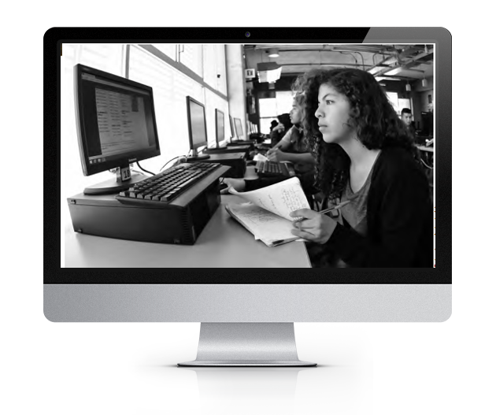
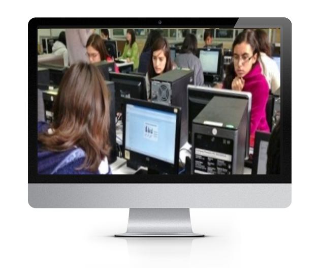
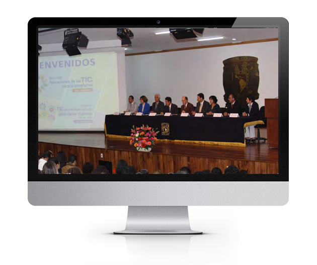
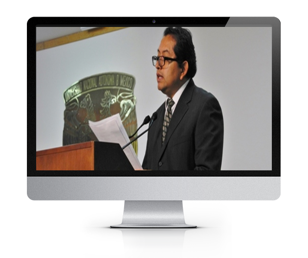
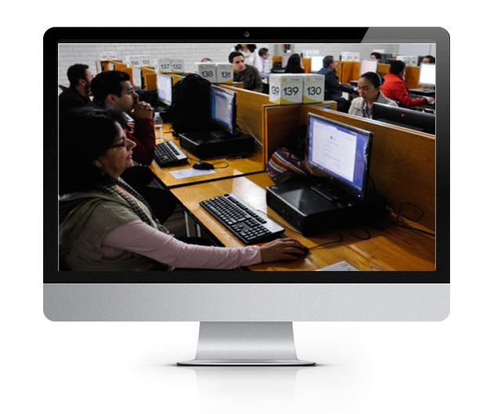
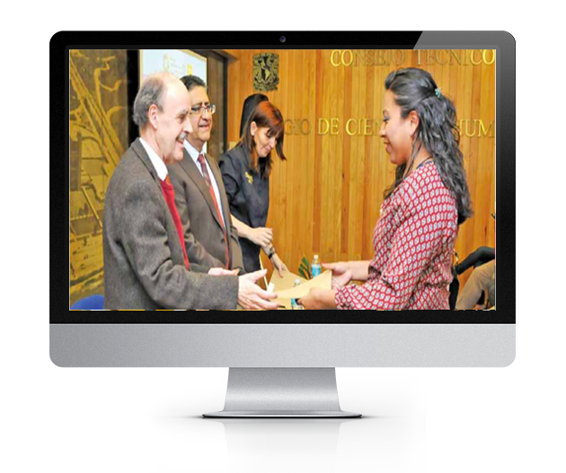
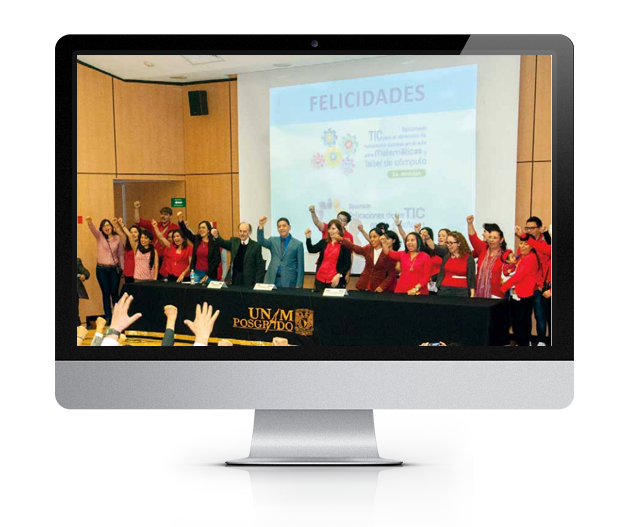
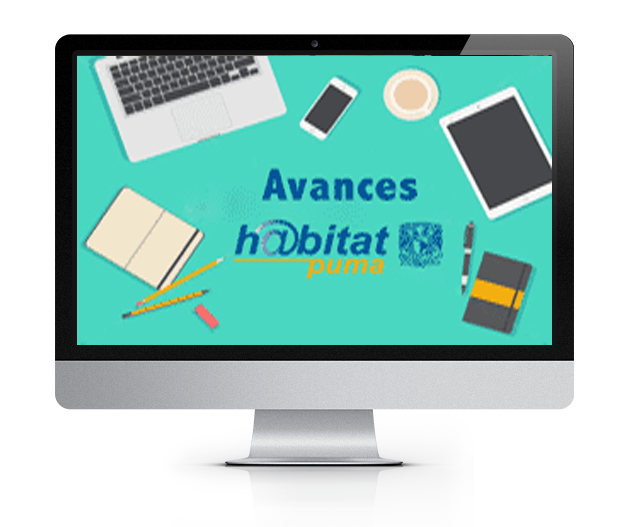

Quiénes somos
Coordinación de Tecnologías para la Educación - h@bitat puma

Busca la UNAM mejorar habilidades tecnológicas
 Los alumnos de bachillerato son hábiles en el uso instrumental de la tecnología; sin embargo, no saben utilizarla para un aprovechamiento académico, según los resultados del TICómetro, cuestionario diagnóstico sobre habilidades digitales que se aplica a estudiantes de primer ingreso de bachillerato y de algunas licenciaturas.
Leer másRetos de tecnología para alumnos de bachillerato
 Los estudiantes de bachillerato pueden identificar sus habilidades digitales para la educación en el sitio Retos TIC de la UNAM. Esta página, creada por la coordinación, cuenta con diversas actividades para conocer las habilidades en procesamiento y administración de la información, seguridad, acceso a la información y colaboración y comunicación en línea.
Leer másTecnología y actualización docente
 El mundo está cambiando de manera impresionante. Nuestros alumnos tienen maneras diferentes de ver e interactuar con la tecnología y estamos obligados a actualizarnos para brindarles una educación de vanguardia.
Leer másUso de las TIC en el aula escolar
El maestro es fundamental para diseñar y proponer aquellas actividades que van a realizar sus alumnos y que va a decidir que tecnologías y para que las va a utilizar. Es por ello que h@bitat con sus cursos semipresenciales incorporan la tecnología en situaciones cotidianas de enseñanza, para que el profesor adquiera las habilidades necesarias para evaluar la manera más adecuada de llevar su materia.
Leer másAprenden a usar las TIC en la enseñanza
 Un total de 234 docentes que egresaron de la décima edición del Diplomado Aplicaciones de las TIC para la Enseñanza o de la primera emisión del Diplomado TIC para el Desarrollo de Habilidades Digitales en el Aula recibieron diplomas en una ceremonia oficial.
Leer másActualización para mejorar la enseñanza y aprendizaje
 Doce de nuestros académicos concluyeron el Diplomado en Aplicaciones de las TIC para la Enseñanza, impartido por la Coordinación de Tecnologías para la Educación h@bitat puma. (página 9)
Leer másEl Colegio progresa en el uso de las TIC
 Autoridades de la UNAM reconocieron el esfuerzo y empeño de los docentes que concluyeron la sexta emisión del diplomado Aplicaciones de las TIC para la enseñanza, que imparte la Dirección General de Cómputo y Tecnologías de Información y Comunicación (DGTIC), a través de la coordinación h@bitat Puma.
Leer másDocentes se actualizan en el uso de nuevas tecnologías
 Más de 200 profesores del Colegio concluyeron los diplomados: TIC para el desarrollo de habilidades digitales en el aula para matemáticas y taller de cómputo, primera emisión y Aplicaciones de las TIC para la enseñanza, quinta emisión Las cuales organiza e imparte la Dirección General de Cómputo y de Tecnologías de Información y Comunicación (DGTIC).
Leer másTecnología en la enseñanza universitaria
 En seis años de vida ha capacitado a más de cinco mil profesores de bachillerato y a más de tres mil de licenciatura y posgrado de la UNAM para que incorporen más recursos tecnológicos al proceso de enseñanza.
Leer más Hecho en México, Universidad Nacional Autónoma de México (UNAM), todos los derechos reservados 2009 - 2016. Esta página puede ser reproducida con fines no lucrativos, siempre y cuando se cite la fuente completa y su dirección electrónica, y no se mutile. De otra forma requiere permiso previo por escrito de la institución.